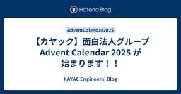

KAYAC Engineers' Blog
https://techblog.kayac.com/
カヤックのエンジニアがサービスの開発や運用などで培ってきた技術などの情報をまとめたブログです。WebやiOS、Androidの技術情報だけではなく、最新のデバイス、VR、Unity、インフラストラクチャなどのさまざまな最新技術についても毎週紹介していきます！
フィード

【カヤック】面白法人グループ Advent Calendar 2025 が始まります！！
KAYAC Engineers' Blog
こんにちは！カヤックの伊藤です。暑い夏が終わり短い秋から急に冬に入ったかと思うと、早くも年の瀬ですね。 12月といえば毎年恒例「面白法人グループ Advent Calender」を今年も実施いたします！ 4回目となる今年も、グループ会社と共にAdvent Calenderを盛り上げていきます！ 例年通り、毎日こちらのはてなブログに投稿していきますのでバラエティー豊富な記事に是非ご期待ください！ また、以下のQiitaカレンダーにも公開次第逐一記事リンクを追加していきます！！ qiita.com 去年のブックマーク上位3記事 今年も去年度Advent Calenderにて公開された記事の中から、…
1日前

Kanagawa.swift #2 がカヤックオフィスで開催されました #kanagawa_swift
KAYAC Engineers' Blog
技術部の小池です。 11/2(日)にカヤック鎌倉オフィスにてKanagawa.swift #2が開催されました。 japan-region-swift.connpass.com カヤック鎌倉オフィス開催のきっかけ SwiftコミュニティであるJapan-\(region).swiftの皆さんからKanagawa.swiftの第2回の開催場所を探しているとのことでご相談をいただいたのがきっかけです。 カヤックでは土日や平日夜にオフィスをテックイベント向けに提供する活動を行っています。 Kanagawa.swiftでは筋トレのような体を使ったコンテンツもあるとのことで、ぼくらの会議棟を会場とし、空…
17日前
コードゴルフコンテスト Anybatross YAPC::Fukuoka 2025 開催のお知らせ
KAYAC Engineers' Blog
技術部の谷脇です。皆様いかがお過ごしでしょうか。今回は素敵なオンラインイベントのお知らせです。どなた様でも参加できますのでぜひご参加ください。YAPC::Fukuoka 2025に参加されない方でも参加可能です。 コードゴルフコンテスト PerlAnybatross を開催します！ perlbatross.kayac.com ルールは簡単。与えられた仕様を満たすプログラムをいかに短く書けるかを競うコードゴルフコンテストです。ここで言う"短く"はバイト数なので、改行やスペースも含みます。 今回からPerl以外にもRuby,Python,JavaScript,PHPで提出可能です。真のトップを目指…
19日前
カヤックはYAPC::Fukuoka 2025にスポンサーしています&社員が登壇します。あのイベントもやります！ #yapcjapan
KAYAC Engineers' Blog
技術部の谷脇です。テックカンファレンスイベントへのスポンサーと登壇、それからこちらのカンファレンスに合わせたイベントのご紹介です。 YAPC::Fukuoka 2025にスポンサーしています！ yapcjapan.org YAPC::Japanは始まりこそPerlをベースとしたコミュニティの技術カンファレンスでしたが、昨今はバラエティ豊かなトークが話されています。私の印象ですが、Perlを昔から使っている方は特定の技術を深く掘って極める人も多いので、YAPCでもディープなトークが話されているなあと感じます。ご興味がある方はチケット販売が10月31日までですのでぜひ購入の上ご参加ください。特に九…
1ヶ月前
Kanagawa.swift #2 が11/2(日)にカヤックオフィスで開催されます
KAYAC Engineers' Blog
技術部の小池です。 11/2(日)にカヤック鎌倉オフィスにてKanagawa.swift #2が開催されます。 SwiftやAppleプラットフォームの開発に興味がある方はぜひお気軽にご参加ください！ japan-region-swift.connpass.com 前回のKanagawa.swift #1の様子は以下の記事でご覧いただけます。 Kanagawa.swiftを開催しました！ Kanagawa.swiftにカメラマンとして参加しました #kanagawa_swift 当日はイベント企画に加え、鎌倉近郊のお菓子なども用意される見込みです。 Swiftの学びとともに、鎌倉の魅力もお楽し…
2ヶ月前
AWS Summit Japan 2025に参加してきました。
KAYAC Engineers' Blog
こんにちは。グループ情報部の池田（@mashiike）です。 先日の6/25、26に幕張メッセで開催されたAWS Summit Japan 2025に参加してきました。 今年も2日間とも参加しましたが、今年はやはり生成AIが大きな話題となっていました。 さて、AWS Summit Japanといえば、毎年恒例のElastic座布団クッションの配布があります。 今年ももちろんゲットしてきました。そこで、参加レポートという形で、今年のクッションが例年に比べてどうだったのかを考察します。 クッションの変遷 まずは、2023年・2024年のクッションと並べて比較した写真がこちらです。 ３年分のクッショ…
5ヶ月前
3年越しのデータ基盤安定化プロジェクトを終えて -Techサイド編
KAYAC Engineers' Blog
こんにちは。グループ情報部の 池田(@mashiike) です。 2019年から、面白法人カヤックと『北欧、暮らしの道具店』を運営する株式会社クラシコムとの協業プロジェクトとして、伴走型支援を行っており、その一環としてデータ基盤の開発・保守運用を行っております。 そして、3年前から「データ基盤安定化プロジェクト」として、クラシコム様のデータ基盤の大きな構造変化を継続して行ってきました。 www.kayac.com note.com この度、そのデータ基盤安定化プロジェクトが一旦の終了を迎え、その内容に関する記事がクラシコム様のNoteにて公開されました。 note.com 本記事では技術的な観…
6ヶ月前
GitHub Actionsの外部ActionでVersionTagを使ってるものを一括でCommitHashにしたい。
KAYAC Engineers' Blog
こんにちは。今年からグループ情報部という部署にいる 池田(@mashiike) です。 背景 先日、GitHub Actionsの tj-actions/changed-files にセキュリティインシデントがありました。実は、 reviewdog/action-setup 経由らしいという話が直近の話題です。 nvd.nist.gov www.wiz.io サプライチェーン攻撃が本格的に心配になってきた今日このごろです。 さて、このような状況で、GitHub Actionsの外部actionへの攻撃に対する対策はどうしたら良いのでしょうか？ そんなとき、ちょうど次の記事が公開されまして、「へ…
8ヶ月前
【JS体操】応援ありがとうございました！〜全5問の振り返り〜
KAYAC Engineers' Blog
面白法人カヤックが主催する JavaScript のコードゴルフ大会『JS体操』の全5問を、作問の裏話とあわせて振り返ります！
10ヶ月前
【Go】テーブル駆動テストのエラーチェックは関数パターンがおすすめ
KAYAC Engineers' Blog
記事公開時点ではSREの市川です。 というのも2024年の大晦日を以て退職となるのですが、実は【カヤック】面白法人グループ Advent Calendar 2024の7日目の記事をすっぽかしていたので、Go におけるテストの話を書いて置き土産といたします。 ケーススタディ 以下のようなSUT(テスト対象)があるとします。 package foo func DoSomething(input string) int { // 何かしらの処理 } この限りでは、SUTがエラーを返さないのでエラーチェックの必要はありません。つまり、以下のようなテストコードを書くことができます。 package fo…
1年前
ありがとうを、実装で
KAYAC Engineers' Blog
この記事はTech KAYAC Advent Calendar 2024の10日目の記事です。 皆さん、2024も終わりますね。メリークリスマス。良いお年を！ 「ぼくらの甲子園！ポケット 高校野球ゲーム」はご存知でしょうか？ 略して「ぼくポケ」は、株式会社カヤックのソシャールゲームのオリジナルIPです。 来年をもってサービス終了させていただきますが、運営開始するからなんと長い10年間もサービスを提供しております。 その長い10年間の5分の1、ゲームの終盤に、私ikkakukuku、Unityエンジニアーとして勤めさせていただきました。 優秀な先輩たちから色々優しく教えていただいて、その短い間の…
1年前
天下一甲子園 〜10周年でサービス終了するソシャゲに打ち上げる最後の花火〜
KAYAC Engineers' Blog
この記事はTech KAYAC Advent Calendar 2024の25日目の記事です。 こんにちは、@commojunです。 www.kayac.com 私がサーバサイドエンジニアとしてずっと従事してきたソーシャルゲームサービス「ぼくらの甲子園！ポケット」が、2025年1月8日でサービスを終了します。 prtimes.jp ぼくらの甲子園！ポケット（以下ぼくポケ）開発チームでは、これまで遊んでくださった皆様への感謝を伝えるため、2024年10月1日から、「天下一甲子園大会」という特別なイベントを開催していました。そしてつい数日前の12月22日、イベントのすべての内容が終了しました。 こ…
1年前
勝手にAIがプログラム書いてくれたら嬉しくない?
KAYAC Engineers' Blog
この記事は【カヤック】面白法人グループ Advent Calendar 2024の24日目の記事です。 おはこんばんちは。らりです。 2週間前に給湯器が壊れ、水を浴びながら生きてます。 インフルエンザも流行ってるし仕方ないですね。 はじめに 近年ではAIが進化し、もはや人間と区別がつかなくなってきました。 昨今のAIについては色々議論が巻き起こっていますが、本当に仕事を奪われそうでSFじみてきましたね。 ロボット工学三原則には「仕事を奪ってはならない」とは無いので、どこかで付け足されるのでしょうか。 ところで、簡単なプロジェクトを淡々とAIに作ってもらう検証をしてみました。 お題は電卓で、色々…
1年前
Function URLsとIPv6リクエストで実現するケチケチLambda活用術
KAYAC Engineers' Blog
この記事は 【カヤック】面白法人グループ Advent Calendar 2024 の 23日目の記事です。 カヤック技術部の谷脇です。さて、皆さんはAWS Lambdaが非常に安く使えることをご存知でしょうか？ Lambdaは1ヶ月あたり100万回のリクエストと総実行時間320万秒が無料です。これを超えたとしても非常に安く使えることが知られています。 例えばWebアプリケーションサーバーを例に出すと、ECSなどと違いリクエストドリブンであるという点は考慮する必要があるものの、シンプルな管理画面や社内ツールであればLambdaで十分に実装できます。 一方で罠も存在します。使おうとしたら余計にか…
1年前
【Go】HTTP/2とHTTP/3を試してみて感じたこと
KAYAC Engineers' Blog
はじめに この記事は【カヤック】面白法人グループ Advent Calendar 2024の２２日目の記事です。 こんにちは、カヤックボンド所属のサーバーサイドエンジニアの有馬と申します。 本記事のテーマは2022年6月6日に標準化されたHTTP/3についてです。 業務内でHTTP/2のソケット通信について触れる機会があり、「そういえば、HTTP/2とかHTTP/3についてあまり知らないな～」と実感したため、 本記事を書きたいと思いました。 本記事ではO'Reilly Japanさんの「Real World HTTP」 を参考にし、実際にコードを実装してみた所感を書いていきます。 www.or…
1年前
SMOUTリニューアルでカルーセルライブラリにEmbla Carouselを採用した話
KAYAC Engineers' Blog
この記事は【カヤック】面白法人グループ Advent Calendar 2024の21日目の記事です 🍊 みなさま初めまして！ウェブフロントエンジニアのbobです！ www.kayac.com 今回は、カヤックが提供している移住スカウトサービスSMOUTを先日一部リニューアルをした際に、カルーセル周りの刷新・実装をしましたのでそこで得た知見などを書かせていただきます。 この度移住スカウトサービスSMOUTを大リニューアルしました！ つい先日、カヤックが提供している移住スカウトサービス「SMOUT」を一部リニューアルしたものをリリースいたしました！ SMOUTは移住したい人と移住してきて欲しい人…
1年前
Meta Quest 3で色んなMR作ってみた！マルチプレイからストアリリース、仕事での活用まで
KAYAC Engineers' Blog
この記事はTech KAYAC Advent Calendar 2024の20日目の記事です。 面白プロデュース事業部 技術部の藤澤です。 この記事は、2024年実施してきたMRに関する3つの取り組みのご紹介と、それに関連するちょっとしたTipsをお話しする内容となっております。 マルチプレイMRコンテンツの開発 作るまでの背景 どんなものを作ったか Tips 同じ空間にモノを出す HMD間のマッチング、データ通信 マッチング データ通信 MRコンテンツのストアリリース リリースしたコンテンツのご紹介 Tips 伸縮する野菜 3Dモデル Unity クライアントワーク事業での活用 模型AR概要…
1年前
【JS体操】第5問「画像からアスキーアートを生成しよう」解説
KAYAC Engineers' Blog
YAPC::Hakodate 2024 の開催に合わせて出題した『JS体操』第5問「画像からアスキーアートを生成しよう」の解説記事です。
1年前
【JS体操】第4問「ひらがなを画数順に並び替えよう」解説（最短文字数は109文字！）
KAYAC Engineers' Blog
『JS体操』第4問「ひらがなを画数順に並び替えよう」の解説記事。なんと最短文字数は109文字！挑戦してくださったみなさまの回答や社内QAチームが事前に検証・想定していた回答も含め一挙にご紹介します。
1年前
【Unity】BaseMeshEffectを継承したクラスを使った角丸表示
KAYAC Engineers' Blog
このエントリは【カヤック】面白法人グループ Advent Calendar 2024の19日目の記事です。 はじめに 環境 準備 実装 BaseMeshEffectを継承 真ん中を表示 上下左右に四角表示を追加 角丸表示を追加 完成 まとめ はじめに こんにちは、カヤックアキバスタジオでエンジニアをやっている臼井です。 今年も残りわずかですね、みなさんいかがお過ごしでしょうか？ さて、今回はuGUIのImage、RawImageの角丸表示をやってみた内容を紹介していこうと思います。 環境 MacBook Pro 14インチ(macOS Sonoma 14.1) Unity2022.3.52f1…
1年前
【WebGPU】Compute Shader で Curl Noise を計算してパーティクルを動かす
KAYAC Engineers' Blog
🎄この記事は【カヤック】面白法人グループ Advent Calendar 2024の18日目の記事です 🎄 こんにちは！ハイパーカジュアルゲームチーム・エンジニアの深澤です。 WebGPU の Compute Shader で Curl Noise を計算し、パーティクルの位置を更新してみました。 スクショは、MacBookPro M1で100万個のパーティクルを動かしたものです。 画像をクリックするとデモに飛びます。 WebGPU で実装しているため、Chromeのみの動作となります。 デモURL: https://takumifukasawa.github.io/webgpu-partic…
1年前
Mackerelのグラフアノテーションの効果的な使い方の例
KAYAC Engineers' Blog
この記事では、Tonamelの事例を通じて、Mackerelのグラフアノテーション機能を活用してサービスの負荷を可視化する方法を紹介しています。大会開催期間中の負荷ピークを一目で把握できるようになり、運用がより便利になりました。イベント型サービスを運営している方に参考になる内容です。詳細は記事をご覧ください！
1年前
Unity Editorから特定アセットのGitHubファイルリンクをブラウザで開きたい
KAYAC Engineers' Blog
Unity Editorから特定アセットのGitHubファイルリンクをブラウザで開くpackageをリリースしました。
1年前
新卒が進める新卒勉強会
KAYAC Engineers' Blog
技術部 フロントエンドエンジニアの村上です。 面白法人グループアドベントカレンダー2025 15日目の記事になります。 今回は、2024年4月にカヤックに入社したフロントエンドエンジニア5名に向けた勉強会を、新卒自身で進めるという取り組みについて書きたいと思います。 背景 入社して半年した頃、エンジニアが2人ずつ自由なテーマで発表する社内勉強会が始まりました。 新卒の自分にとっては知らない技術やテクニックを知る良い機会になっている一方で、ReactやNext.jsなど業務で馴染みのある技術については「基礎的な知識があればもっと発表内容を吸収できるのではないか」と思いました。 また自分の順番が回…
1年前
さあ、“文字”のはなしをしよう。
KAYAC Engineers' Blog
面白法人グループアドベントカレンダー2024の14日目の記事です。 フロントエンドエンジニアをしているけいとです。社内で文系エンジニアというあまり浸透しない二つ名を自称していますので、“文字”の話をざっくばらんにしてみようと思います。 “文字”コードのはなし エンジニアとして活動する上で文字といえばやはり文字コードですよね。 文字コードについて簡単に説明すると、文字をコンピュータ上で処理する際に識別するために文字それぞれの種類に対して番号を割り振った一覧表のことです。例えば、 “KAYAC” というテキストを打ち込んで友達に送信するのに、ASCIIと呼ばれる文字コードを利用するとします。その際…
1年前
【JetBrains Rider】「個人的振り返り」と「JetBrains Rider 推しポイント」
KAYAC Engineers' Blog
Tech KAYAC Advent Calendar 2024 の13日目の記事になります。 カヤックボンドでエンジニアをやっております志村と申します。 今回は今年度の個人的な振り返りとJetBrains Riderの個人的推しポイントについて記事にしてみました！ 〇 ボンド振り返り 〇 Jet Brains Rider ツール概要 開発体験 ライセンスが超絶扱いやすい 全体的に活発的 全体的に操作しやすい ◆ ユーザーインターフェース オススメ記事＆機能紹介 ① JetBrains .NET Meetup Tokyo 2019 ② 豊富なデバック機能 ③IDE上でのGit操作 ④ 強力な検索…
1年前
Laravel Filamentでお手軽に作る管理画面とそのためのテーブル設計
KAYAC Engineers' Blog
はじめに この記事は【カヤック】面白法人グループ Advent Calendar 2024の12日目の記事です。 こんにちは、カヤックボンド所属のサーバーサイドエンジニアの朝倉と申します。 本記事のテーマはLaravel filamentを用いた管理画面作成です。 管理画面を簡単に作れるFilamentの基本的な使い方と要件をちゃんと決めずに見切り発車したらぶつかってしまうFilamentならではの問題を書いていきたいと思います。 Laravel Filamentとは filamentphp.com まずPHPのフレームワークとしてLaravelがあり、その拡張パッケージがFilamentです…
1年前
最近のスマホでWeb Share APIが動かなくなってるらしい
KAYAC Engineers' Blog
カヤック 技術部でフロントエンジニア・プランナーをしてますゆうもやです。 面白法人グループアドベントカレンダー2024 11日目記事です。 皆様「Web Share API」をご存知でしょうか？Webページからアプリに直接画像やテキストをシェアできる非常に便利な機能です。 カヤックでは診断やジェネレーター系コンテンツを多く制作しているため、このAPIを頻繁に活用してきました。 www.kayac.com しかし、最近一部のスマホで期待通りに動作しないケースが増えているのをご存知でしょうか？ Web Share APIとは Web Share APIは、Webページから直接画像やテキストをシェア…
1年前
Pine Script でチャートに線を引く
KAYAC Engineers' Blog
こんにちは。技術部の小池です。 この記事は 面白法人グループ Advent Calendar 2024 の9日目の記事です。 世は貯蓄から投資への時代、投資を始めての株などのチャートを見る機会が増えた方もいるのではないでしょうか。 今回はチャート上で実行できる趣味のプログラミングの話をします。 TradingView 上で開発、実行できる Pine Script というプログラミング言語を使います。TradingView は、株、指数、FX、仮想通貨などの金融市場のチャート分析ができる人気のプラットフォームです。 Pine Script は11月に v6 がリリースされていますが、この記事では…
1年前